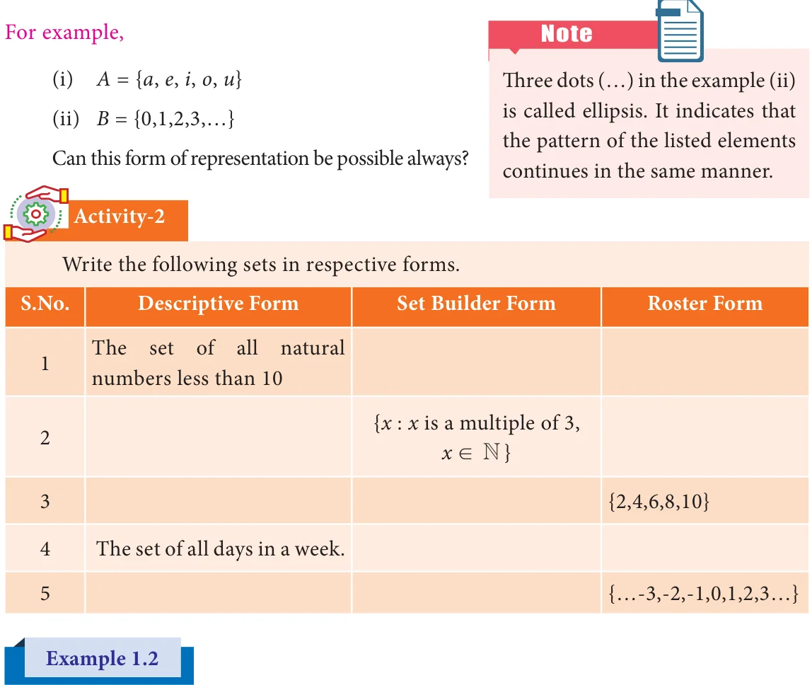

The collection of odd numbers can be described in many ways: (1) "The set of odd numbers" is a fine description, we understand it well. (2) It can be written as {1, 3, 5, …} (3) Also, it can be said as the collection of all numbers x where x is an odd number. All of them are equivalent and useful. For instance,the two descriptions "The collection of all solutions to the equation \(x - 5 =\) 3" and {8} refer to the same set.
A set can be represented in any one of the following three ways or forms:
1.3.1 Descriptive Form
In descriptive form, a set is described in words. For example,
- The set of all vowels in English alphabets.
- The set of whole numbers.
1.3.2 Set Builder Form or Rule Form
In set builder form, all the elements are described by a rule. For example,

- \(A =\) {x : x is a vowel in English alphabets}
- \(B =\) {x|x is a whole number}
1.3.3 Roster Form or Tabular Form
A set can be described by listing all the elements of the set.

Write the set of letters of the following words in Roster form
- ASSESSMENT (ii) PRINCIPAL
Solution
- ASSESSMENT (ii) PRINCIPAL
X= {A, S, E, M, N, T} Y={P, R, I, N, C, A, L}